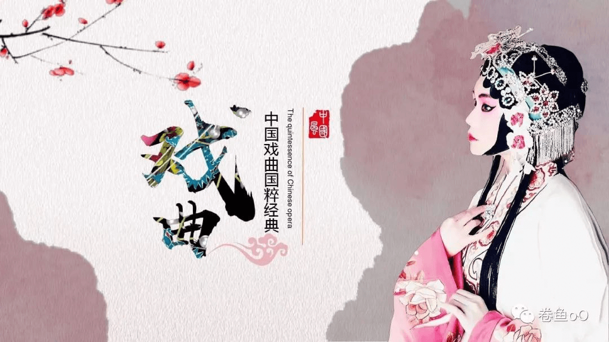
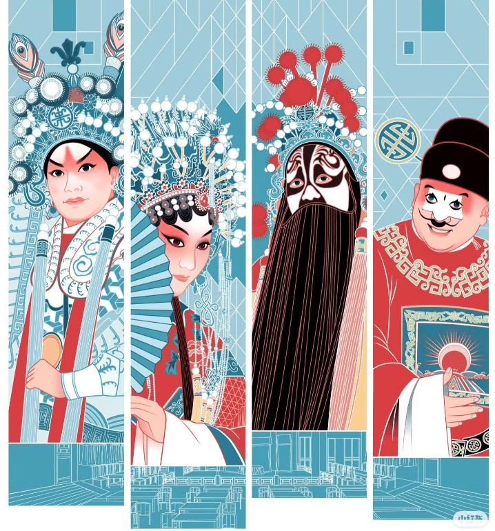
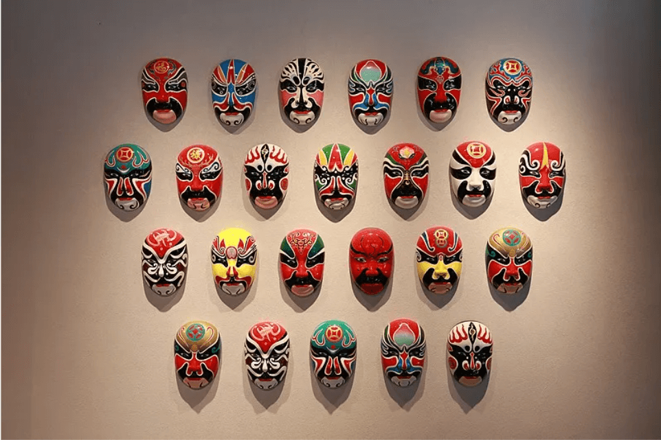
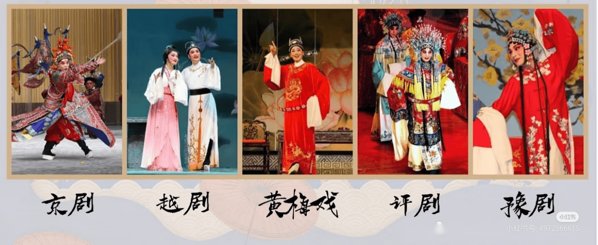

发展历程
戏曲源于先秦祭祀乐舞，历经汉唐百戏、宋元南戏杂剧的成熟，明清演变为昆曲、京剧等多样声腔，近现代融合新元素，成为中华文化的瑰宝


戏曲行当
戏曲行当分为"生、旦、净、丑"四大类，通过程式化的表演区分角色类型，生旦主唱、净角重做、丑角插科打诨，共同构成戏曲完整的表演体系
戏曲脸谱
戏曲脸谱以色彩和图案象征人物性格，如红色表忠勇、黑色显刚直，通过夸张的线条和鲜明的对比塑造角色，是戏曲艺术独特的视觉符号


戏曲剧种
中国戏曲剧种丰富多样，以京剧、昆曲、豫剧、越剧、黄梅戏等为代表，各具地方特色，融合唱、念、做、打，形成百花齐放的戏曲艺术体系